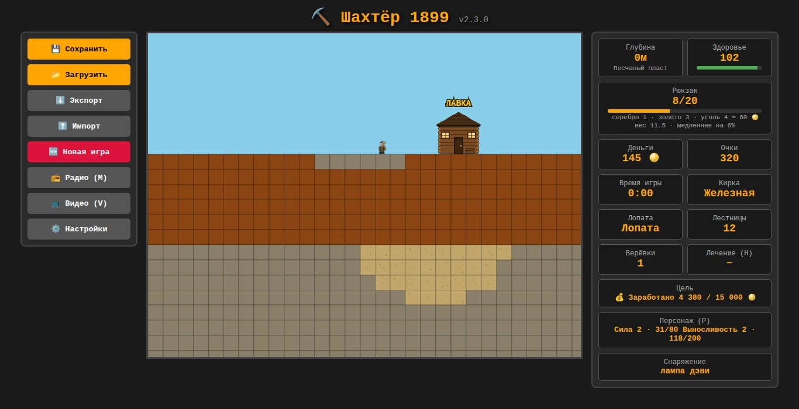
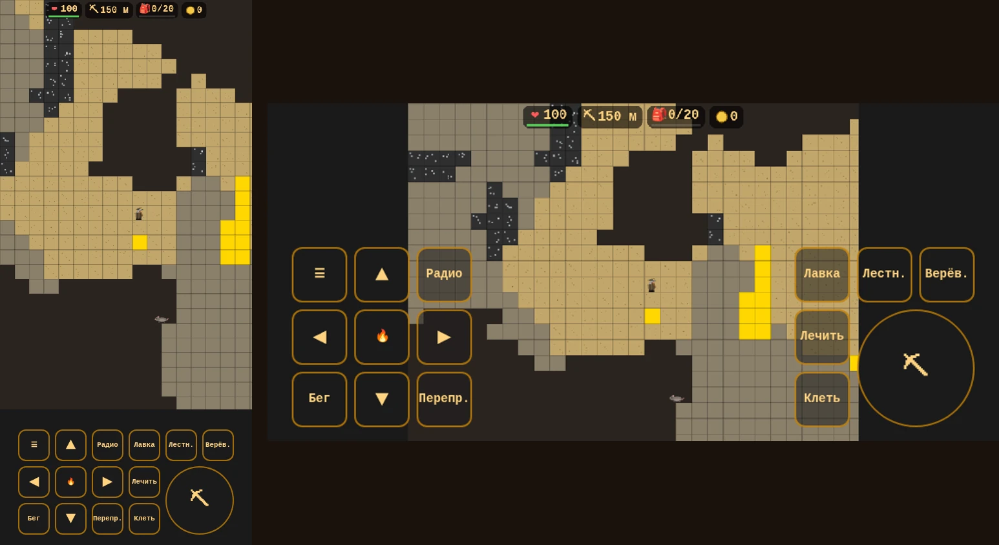

Копай вниз. Чем глубже — тем дороже руда и тем опаснее шахта.
2D-игра про шахтёра: 788 метров вглубь, четыре биома, лавка и подземные твари.
Работает в браузере на компьютере и телефоне. Ничего не нужно устанавливать.
Копай вниз. Чем глубже — тем дороже руда и тем опаснее шахта.
2D-игра про шахтёра: 788 метров вглубь, четыре биома, лавка и подземные твари.
Работает в браузере на компьютере и телефоне. Ничего не нужно устанавливать.

Начинаешь у лавки с ржавой киркой, десятью лестницами и пустым рюкзаком. Копаешь вниз, собираешь руду, поднимаешься и продаёшь. На вырученные деньги — кирка получше, лопата, рюкзак побольше, лампа, бинты. И снова вниз, глубже.
Каждый мир новый: 120 × 800 блоков создаются заново при каждой игре. Игра сохраняется сама, можно держать три своих сохранения и переносить их файлом.
У каждого пласта свой камень, своя руда и своя опасность. Чем ниже, тем твёрже порода.
Песок, золото и уголь — дешёвый, но его много. Здесь живут крысы: догонят — утащат руду из рюкзака.
Глина и серебро, а примерно с 360 м — первые алмазы. После копания трещит потолок, на потолке пещер спят летучие мыши.
Гравий, алмазы и изумруды. В граните прячутся карманы рудничного газа, в углах — пауки с паутиной. С 440 м встречается лава.
Базальт, рубины и платина — самая дорогая руда. Жарко, здоровье тает, а из лавы плюются огнём саламандры.


| Что делать | Компьютер | Телефон |
|---|---|---|
| Ходить, лазать | WASD или стрелки | крестовина |
| Копать, бить | Пробел (держать), вниз — с S, вверх — с W | ⛏, вниз — с ▼, вверх — с ▲ |
| Бежать | Shift | «Бег» |
| Лавка | E у лавки | «Лавка» |
| Лестница, верёвка, переправа | Q, R, T | «Лестн.», «Верёв.», «Перепр.» |
| Лечиться, клеть | H, C | «Лечить», «Клеть» |
| Радио (панель) | M | «Радио» |
| Видео (панель) | V | «Видео» в меню ☰ |
| Персонаж | P | «Персонаж» в меню ☰ |
| Зажечь лампу | L | 🔥 |
| Сохранения | Esc | ☰ |
